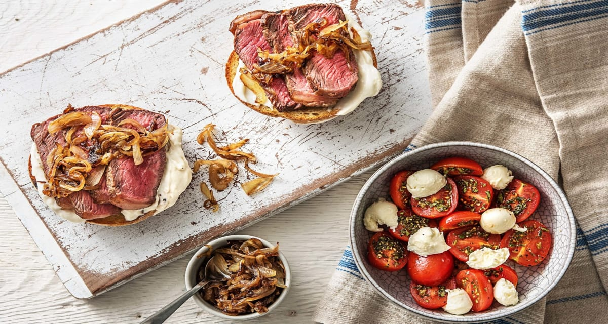

Open-Face Steak Sandwhich

Description
Sweet and savoury caramelized onions top this juicy open-faced
steak sammie. Pair it with a classic Caprese salad as a light
and refreshing complement to this dish!
Ingredients
- 1/2 lb Beef Steak
- 1/2 lb sliced onion
- 2 Ciabatta Buns
- 1/2 lb Grape Tomatoes
- 1 tsp Oregano
- 100g Boccocini Cheese
- 2 tbsp Balsamic Vinegar
- 4 tbsp Mayonnaise
- 2 cloves garlic
- 1 tsp sugar
- 1/4 tsp salt and pepper
Directions
- Before starting, preheat your broiler to high/low.
Wash and dry all produce. In Step 5, use this garlic
guide to determine what garlic level you prefer: 1/4
tsp mild, 1/2 tsp medium and 1 tsp extra! Heat a large
non-stick pan over medium heat. When the pan, add 1
tbsp oil (dbl for 4 ppl), then onions. Cook, stirring
occasionally, until slightly softened, 3-4 min. Add 1
tsp sugar (dbl for 4 ppl) and season with salt. Cook,
stirring occasionally, until onions are golden-brown,
6-8 min.
- Meanwhile, halve tomatoes. Roughly chop 1 tbsp oregano
(dbl for 4 ppl). Toss together tomatoes, oregano, 1 tbsp
vinegar and 1 tbsp oil (dbl both for 4ppl) in a large bowl.
Season with salt and pepper. Set aside.
-
When onions are done, remove the pan from heat. Stir in remaining
vinegar, until onions are coated, 1 min. Transfer caramelized
onions to a small bowl. Set aside. Carefully wipe the pan clean.
On a clean cutting board, pat steak dry with paper towel, then
season with salt and pepper.
-
Heat the same pan over medium-high heat. When hot, add 1 tbsp oil
(dbl for 4 ppl), then steak. Pan-fry, until cooked to desired doneness,
4-6 min per side. ** When steak is done, remove pan from heat.
Transfer steak to a plate. Loosely cover with foil and set aside to
rest, 3-5 min.
- Meanwhile, peel, then mince or grate garlic. Stir together mayo and 1/4
tsp minced garlic in another small bowl. (NOTE: Reference garlic guide.)
Set aside. Halve ciabatta buns. On a baking sheet, arrange ciabatta halves,
cut side up and brush each half with 1 tsp oil. Toast in middle of oven,
until golden-brown, 2-3 min. (TIP: Keep an eye on your ciabatta so that
it doesn't burn!)
- Thinly slice steak. Spread garlic-mayo over toasted ciabatta halves, then
top with steak and caramelized onions. Divide open-faced sandwiches between
plates and serve with marinated tomatoes on the side. Tear bocconcini into
bite-sized pieces over tomatoes, then season with salt and pepper.